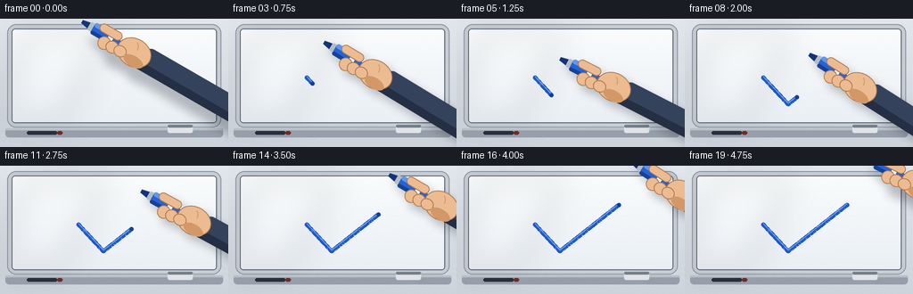
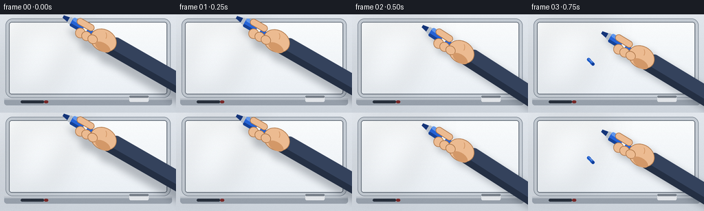

CODING AGENTS AS PIXEL WORLD MODELS
traex/Seed-2.1-Pro-0915 · phygen_032
点击播放 · 原生 RGB 像素
逐轮保存的候选
回放视频、检查图与代码变化。
每份候选均可单独播放。实际图片检查记录在下方工具轨迹中。
候选 01播放与检查图
点击播放 · 原生 RGB 像素


展开代码变化
--- 上一保存版本
+++ 本次保存版本
@@ -0,0 +1,319 @@
+"""Text-to-video: a blue marker writes a check mark on a whiteboard.
+
+Pure numpy/PIL rendering. The scene is drawn at 3x resolution and
+downsampled for smooth anti-aliased edges at 256x144.
+"""
+from pathlib import Path
+
+import numpy as np
+from PIL import Image, ImageDraw, ImageFilter
+
+import artifact_io
+
+CASE_DIR = Path(__file__).parent
+W, H, N, FPS = 256, 144, 20, 4.0
+SS = 3
+SW, SH = W * SS, H * SS
+
+rng = np.random.default_rng(7)
+
+# ---------------------------------------------------------------- palette
+WALL_TOP = np.array([226, 231, 237])
+WALL_BOT = np.array([205, 212, 220])
+BOARD_TOP = np.array([250, 252, 253])
+BOARD_BOT = np.array([235, 240, 245])
+FRAME_LIGHT = (198, 205, 213)
+FRAME_DARK = (138, 148, 159)
+INK = (27, 90, 199)
+INK_HI = (74, 128, 226)
+INK_WET = (18, 62, 150)
+BARREL = (37, 99, 214)
+BARREL_DARK = (22, 66, 150)
+BARREL_LIGHT = (96, 150, 235)
+NIB = (20, 52, 120)
+SKIN = (236, 187, 145)
+SKIN_SHADE = (211, 152, 104)
+SKIN_LINE = (176, 122, 78)
+SLEEVE = (52, 66, 92)
+SLEEVE_DARK = (36, 47, 67)
+
+
+def s(p):
+ """Final-resolution point -> supersampled point."""
+ return (p[0] * SS, p[1] * SS)
+
+
+# ---------------------------------------------------------------- board
+def make_background():
+ """Wall, aluminum frame, whiteboard surface, tray."""
+ img = Image.new("RGB", (SW, SH))
+ px = img.load()
+ top = WALL_TOP.astype(float)
+ bot = WALL_BOT.astype(float)
+ for y in range(SH):
+ t = y / (SH - 1)
+ col = tuple((top * (1 - t) + bot * t).astype(int))
+ for x in range(SW):
+ px[x, y] = col
+
+ d = ImageDraw.Draw(img)
+
+ # Aluminum frame around the board.
+ fx0, fy0 = s((8, 6))
+ fx1, fy1 = s((248, 122))
+ d.rounded_rectangle([fx0, fy0, fx1, fy1], radius=10 * SS, fill=FRAME_DARK)
+ d.rounded_rectangle(
+ [fx0 + SS, fy0 + SS, fx1 - SS, fy1 - SS],
+ radius=9 * SS,
+ fill=FRAME_LIGHT,
+ )
+
+ # Whiteboard surface with a vertical gradient.
+ bx0, by0 = s((14, 12))
+ bx1, by1 = s((242, 116))
+ board = Image.new("RGB", (bx1 - bx0, by1 - by0))
+ bpx = board.load()
+ bt, bb = BOARD_TOP.astype(float), BOARD_BOT.astype(float)
+ for y in range(board.height):
+ t = y / (board.height - 1)
+ col = tuple((bt * (1 - t) + bb * t).astype(int))
+ for x in range(board.width):
+ bpx[x, y] = col
+ img.paste(board, (bx0, by0))
+
+ # Faint glossy sheen, a soft diagonal band of light.
+ sheen = Image.new("RGBA", (SW, SH), (0, 0, 0, 0))
+ sd = ImageDraw.Draw(sheen)
+ sd.polygon(
+ [
+ s((30, 12)),
+ s((120, 12)),
+ s((70, 116)),
+ s((0, 116)),
+ ],
+ fill=(255, 255, 255, 38),
+ )
+ sheen = sheen.filter(ImageFilter.GaussianBlur(18 * SS))
+ img = Image.alpha_composite(img.convert("RGBA"), sheen)
+
+ # Inner shadow where surface meets frame.
+ d = ImageDraw.Draw(img)
+ d.rounded_rectangle(
+ [bx0 - SS, by0 - SS, bx1 + SS, by1 + SS],
+ radius=4 * SS,
+ outline=(90, 100, 112, 120),
+ width=SS,
+ )
+
+ # Marker tray along the bottom of the frame.
+ ty0, ty1 = s((0, 123))[1], s((0, 133))[1]
+ d.rounded_rectangle(
+ [fx0 - 2 * SS, ty0, fx1 + 2 * SS, ty1],
+ radius=4 * SS,
+ fill=(150, 159, 170),
+ )
+ d.rectangle([fx0 - 2 * SS, ty0, fx1 + 2 * SS, ty0 + 2 * SS], fill=(185, 192, 200))
+ # A felt eraser resting on the tray.
+ ex0, ey0 = s((188, 119))
+ ex1, ey1 = s((216, 128))
+ d.rounded_rectangle([ex0, ey0, ex1, ey1], radius=2 * SS, fill=(225, 228, 232))
+ d.rounded_rectangle([ex0, ey0, ex1, ey0 + 3 * SS], radius=2 * SS, fill=(120, 128, 138))
+ # A spare marker lying on the tray.
+ mx0, my = s((30, 128))
+ d.rounded_rectangle([mx0, my - 2 * SS, mx0 + 34 * SS, my + 2 * SS], radius=2 * SS, fill=(40, 48, 60))
+ d.rounded_rectangle([mx0 + 34 * SS, my - 2 * SS, mx0 + 40 * SS, my + 2 * SS], radius=2 * SS, fill=(120, 40, 40))
+
+ # Very light surface grain so the whiteboard reads as a real surface.
+ arr = np.asarray(img.convert("RGB")).astype(np.int16)
+ noise = rng.normal(0, 1.6, arr.shape[:2])[..., None]
+ arr = np.clip(arr + noise, 0, 255).astype(np.uint8)
+ return Image.fromarray(arr).convert("RGBA")
+
+
+BACKGROUND = make_background()
+
+# ---------------------------------------------------------------- marker
+# Marker is drawn on a fixed canvas; rotation keeps the nib tip anchored.
+MC_W, MC_H = 300 * SS, 150 * SS
+TIP = (MC_W // 2 - 90 * SS, MC_H // 2)
+
+
+def build_marker():
+ layer = Image.new("RGBA", (MC_W, MC_H), (0, 0, 0, 0))
+ d = ImageDraw.Draw(layer)
+ tx, ty = TIP
+
+ # Felt nib: short dark cone.
+ d.polygon(
+ [(tx, ty - 2 * SS), (tx + 10 * SS, ty - 4 * SS),
+ (tx + 10 * SS, ty + 4 * SS), (tx, ty + 2 * SS)],
+ fill=NIB,
+ )
+ # Metal collar.
+ d.rounded_rectangle(
+ [tx + 9 * SS, ty - 5 * SS, tx + 15 * SS, ty + 5 * SS],
+ radius=2 * SS, fill=(180, 188, 198),
+ )
+ # Barrel.
+ b0, b1 = tx + 14 * SS, tx + 92 * SS
+ d.rounded_rectangle([b0, ty - 7 * SS, b1, ty + 7 * SS], radius=5 * SS, fill=BARREL)
+ d.rounded_rectangle([b0, ty - 7 * SS, b1, ty - 2 * SS], radius=4 * SS, fill=BARREL_LIGHT)
+ d.rounded_rectangle([b0, ty + 3 * SS, b1, ty + 7 * SS], radius=3 * SS, fill=BARREL_DARK)
+ # White label band.
+ d.rounded_rectangle(
+ [tx + 34 * SS, ty - 7 * SS, tx + 58 * SS, ty + 7 * SS],
+ radius=2 * SS, fill=(238, 242, 247),
+ )
+ d.rectangle([tx + 40 * SS, ty - 3 * SS, tx + 52 * SS, ty + 3 * SS], fill=BARREL)
+ # End cap.
+ d.rounded_rectangle(
+ [b1 - 4 * SS, ty - 7 * SS, b1 + 6 * SS, ty + 7 * SS],
+ radius=5 * SS, fill=BARREL_DARK,
+ )
+
+ # Hand gripping the barrel (stylized side view).
+ # Sleeve entering from the right edge.
+ d.rounded_rectangle(
+ [tx + 78 * SS, ty - 13 * SS, MC_W, ty + 15 * SS],
+ radius=8 * SS, fill=SLEEVE,
+ )
+ d.rectangle([tx + 78 * SS, ty + 6 * SS, MC_W, ty + 15 * SS], fill=SLEEVE_DARK)
+ # Palm / back of the hand.
+ d.ellipse(
+ [tx + 48 * SS, ty - 15 * SS, tx + 88 * SS, ty + 17 * SS],
+ fill=SKIN, outline=SKIN_LINE, width=SS,
+ )
+ # Curled fingers wrapping under the barrel.
+ for i, fx in enumerate((26, 36, 46)):
+ d.ellipse(
+ [tx + fx * SS, ty + 1 * SS, tx + (fx + 15) * SS, ty + (16 - i) * SS],
+ fill=SKIN, outline=SKIN_LINE, width=SS,
+ )
+ # Thumb across the top of the barrel.
+ d.rounded_rectangle(
+ [tx + 20 * SS, ty - 11 * SS, tx + 48 * SS, ty - 1 * SS],
+ radius=5 * SS, fill=SKIN, outline=SKIN_LINE, width=SS,
+ )
+ # Knuckle shading.
+ d.arc(
+ [tx + 52 * SS, ty - 12 * SS, tx + 70 * SS, ty + 6 * SS],
+ start=300, end=360, fill=SKIN_SHADE, width=SS,
+ )
+ d.ellipse(
+ [tx + 60 * SS, ty + 4 * SS, tx + 84 * SS, ty + 16 * SS],
+ fill=SKIN_SHADE,
+ )
+ return layer
+
+
+MARKER = build_marker()
+
+
+def place_marker(base, tip_xy, tilt_deg, lift_px):
+ """Paste the rotated marker (and its shadow) with nib at tip_xy."""
+ rotated = MARKER.rotate(-tilt_deg, resample=Image.Resampling.BICUBIC, expand=False)
+
+ # Soft contact shadow on the board.
+ shadow_alpha = rotated.getchannel("A").filter(ImageFilter.GaussianBlur(5 * SS))
+ shadow = Image.new("RGBA", rotated.size, (20, 28, 40, 0))
+ shadow.putalpha(shadow_alpha.point(lambda a: int(a * 0.28)))
+ ox, oy = s((5 + lift_px * 0.4, 7 + lift_px * 0.5))
+ base.alpha_composite(shadow, (int(tip_xy[0] - TIP[0] + ox), int(tip_xy[1] - TIP[1] + oy)))
+
+ pos = (int(tip_xy[0] - TIP[0]), int(tip_xy[1] - TIP[1] - lift_px * SS))
+ base.alpha_composite(rotated, pos)
+
+
+# ---------------------------------------------------------------- ink path
+CHECK = [s(p) for p in [(88, 66), (116, 96), (182, 44)]]
+
+
+def densify(points, step=2):
+ """Densify a polyline into evenly spaced samples with arc lengths."""
+ dense = [points[0]]
+ dists = [0.0]
+ for a, b in zip(points[:-1], points[1:]):
+ seg = np.hypot(b[0] - a[0], b[1] - a[1])
+ steps = max(1, int(seg / step))
+ for k in range(1, steps + 1):
+ t = k / steps
+ dense.append((a[0] * (1 - t) + b[0] * t, a[1] * (1 - t) + b[1] * t))
+ dists.append(dists[-1] + np.hypot(dense[-1][0] - dense[-2][0],
+ dense[-1][1] - dense[-2][1]))
+ return dense, np.array(dists)
+
+
+DENSE, DISTS = densify(CHECK)
+PATH_LEN = DISTS[-1]
+
+
+def path_at(fraction):
+ target = np.clip(fraction, 0, 1) * PATH_LEN
+ idx = int(np.searchsorted(DISTS, target))
+ idx = min(idx, len(DENSE) - 1)
+ return DENSE[idx]
+
+
+def draw_ink(base, fraction, wet):
+ """Draw the check mark up to `fraction` of its length."""
+ if fraction <= 0:
+ return
+ end = max(2, int(np.searchsorted(DISTS, fraction * PATH_LEN)))
+ pts = DENSE[:end + 1]
+ layer = Image.new("RGBA", (SW, SH), (0, 0, 0, 0))
+ d = ImageDraw.Draw(layer)
+ width = 5 * SS
+ d.line(pts, fill=INK + (255,), width=width, joint="curve")
+ r = width // 2
+ for p in (pts[0], pts[-1]):
+ d.ellipse([p[0] - r, p[1] - r, p[0] + r, p[1] + r], fill=INK + (255,))
+ # Thin glossy highlight along the top of the stroke.
+ hi_pts = [(x, y - 1.2 * SS) for x, y in pts]
+ d.line(hi_pts, fill=INK_HI + (180,), width=max(1, SS), joint="curve")
+ if wet:
+ p = pts[-1]
+ d.ellipse([p[0] - 2 * SS, p[1] - 2 * SS, p[0] + 2 * SS, p[1] + 2 * SS],
+ fill=INK_WET + (255,))
+ base.alpha_composite(layer)
+
+
+# ---------------------------------------------------------------- timeline
+def render_frame(i):
+ frame = BACKGROUND.copy()
+
+ if i < 2:
+ # Approach: nib hovers just above the start of the check.
+ k = i / 2
+ hover = s((80 - 8 * k, 56 - 4 * k))
+ tip = (hover[0], hover[1])
+ lift = 6 * (1 - k) + 2
+ ink_frac, wet, tilt = 0.0, False, 30
+ elif i <= 16:
+ # Writing phase.
+ frac = (i - 2) / 14
+ tip = path_at(frac)
+ lift = 0
+ ink_frac, wet, tilt = frac, True, 30 + 3 * np.sin(i * 0.9)
+ else:
+ # Lift off and move away; the finished check stays on the board.
+ k = (i - 16) / 4
+ end = CHECK[-1]
+ tip = (end[0] + 14 * k * SS, end[1] - 12 * k * SS)
+ lift = 7 * k
+ ink_frac, wet, tilt = 1.0, False, 30 - 5 * k
+
+ draw_ink(frame, ink_frac, wet)
+ place_marker(frame, tip, tilt, lift)
+
+ small = frame.convert("RGB").resize((W, H), Image.Resampling.LANCZOS)
+ return np.asarray(small, dtype=np.uint8)
+
+
+def main():
+ frames = np.stack([render_frame(i) for i in range(N)], axis=0)
+ artifact_io.save(frames, CASE_DIR)
+ print(f"saved {frames.shape} to {CASE_DIR}")
+
+
+if __name__ == "__main__":
+ main()
可观测工具轨迹
实际执行的命令与返回图片。
命令 1exit 0
/bin/bash -lc 'ls -la && cat prompt.txt GENERATION_RULES.md task_spec.json'
命令 2exit 0
/bin/bash -lc 'cat artifact_io.py && cat player_template.html | head -50'
命令 3exit 0
/bin/bash -lc 'cd . && time python generate.py && ls -la'
命令 4exit 0
/bin/bash -lc "cd . && python - <<'EOF'
import numpy as np
from PIL import Image
frames = np.stack([np.asarray(Image.open(f\"frames/{i:02d}.png\")) for i in range(20)])
print(\"shape\", frames.shape, \"range\", frames.min(), frames.max())
# Detect blue ink: strong blue, low red, inside board area.
r, g, b = frames[..., 0].astype(int), frames[..., 1].astype(int), frames[..., 2].astype(int)
ink = (b > 150) & (b - r > 70) & (b - g > 40)
counts = ink.sum(axis=(1, 2))
print(\"ink pixel counts per frame:\")
print(counts.tolist())
# Ink frontier (rightmost-ish extent along path): centroid and extremes of ink.
for i in [0, 1, 2, 5, 9, 13, 16, 19]:
ys, xs = np.nonzero(ink[i])
if len(xs):
print(f\"frame {i:2d}: n={len(xs):4d} x[{xs.min()},{xs.max()}] y[{ys.min()},{ys.max()}] centroid=({xs.mean():.1f},{ys.mean():.1f})\")
else:
print(f\"frame {i:2d}: no ink\")
# Motion energy between consecutive frames.
diff = np.abs(frames[1:].astype(int) - frames[:-1].astype(int)).sum(axis=3)
print(\"\\nmean per-frame motion energy:\", diff.mean(axis=(1, 2)).round(2).tolist())
# Skin detection to confirm hand present every frame.
skin = (r > 180) & (g > 130) & (g < 210) & (r > g) & (g > b)
print(\"\\nskin pixels per frame:\", skin.sum(axis=(1,2)).tolist())
# Whiteboard whiteness fraction (should stay mostly white).
white = (r > 235) & (g > 235) & (b > 235)
print(\"white fraction per frame:\", (white.mean(axis=(1,2))).round(3).tolist())
EOF"命令 5exit 0
/bin/bash -lc "cd . && python - <<'EOF'
import numpy as np
from PIL import Image
frames = np.stack([np.asarray(Image.open(f\"frames/{i:02d}.png\")) for i in range(20)])
r, g, b = frames[..., 0].astype(int), frames[..., 1].astype(int), frames[..., 2].astype(int)
blue = (b > 150) & (b - r > 70) & (b - g > 40)
# Expected check vertices in final-frame coordinates.
verts = [(88, 66), (102, 81), (116, 96), (150, 70), (182, 44)]
print(\"blue present at check vertices (frame, then vertex checks):\")
for i in [2, 3, 9, 16, 19]:
hits = []
for x, y in verts:
region = blue[i, max(0, y-3):y+4, max(0, x-3):x+4]
hits.append(region.sum())
print(f\"frame {i:2d}: blue px near vertices = {hits}\")
# Ink-only mask: blue pixels that remain static from frame 16 through 19.
static_blue = blue[16] & blue[17] & blue[18] & blue[19]
ys, xs = np.nonzero(static_blue)
print(f\"\\nstatic ink pixels: {len(xs)}, x[{xs.min()},{xs.max()}], y[{ys.min()},{ys.max()}]\")
# Ink growth along path: x-extent of static-ish blue within board writing band y in 35..100, x<200
band = blue[:, 35:102, 60:200]
print(\"writing-band blue counts per frame:\", band.sum(axis=(1,2)).tolist())
# Sample actual colors along the check in final frame.
f19 = frames[19]
for x, y in verts:
print(f\"({x},{y}) RGB =\", f19[y, x].tolist())
# Rough ASCII map of frame 16 to see composition.
small = np.asarray(Image.open(\"frames/16.png\").convert(\"L\").resize((64, 36)))
for row in small:
print(\"\".join(\"#\" if v < 90 else (\"+\" if v < 170 else (\".\" if v < 235 else \" \")) for v in row))
EOF"命令 6exit 0
/bin/bash -lc "cd . && python - <<'EOF'
import numpy as np
from PIL import Image
data = np.load(\"pixels.npz\")
packed = data[\"pixels\"] # H, W, N packed RGB
H, W, N = packed.shape
decoded = np.empty((N, H, W, 3), dtype=np.uint8)
v = packed.astype(np.uint32)
decoded[..., 0] = (v >> 16) & 255
decoded[..., 1] = (v >> 8) & 255
decoded[..., 2] = v & 255
decoded = decoded.transpose(2, 0, 1, 3) if False else decoded
pngs = np.stack([np.asarray(Image.open(f\"frames/{i:02d}.png\")) for i in range(N)])
print(\"npz matches frames PNGs:\", np.array_equal(decoded, pngs))
print(\"shape:\", decoded.shape, \"dtype:\", decoded.dtype)
# No blank or frozen frames check.
uniq = len(set(tuple(f.reshape(-1)[:1000]) for f in decoded))
print(\"distinct frames:\", uniq, \"of\", N)
EOF
ls frames | head -25 && ls -la pixels.npz index.html inspection.png transition_check.png"保存候选 1 份；完成命令 6 次；可验证图片返回 0 张。原始 API 响应与完整日志保留在本地。